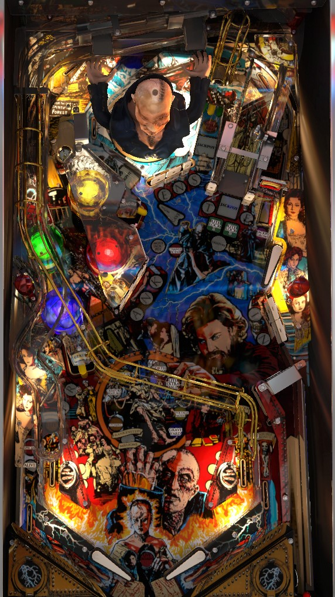

Not to be confused with Monster Bash (Bally Williams, 1998), which famously has a large Frankenstein toy, or Bram Stoker's Dracula (Bally Williams, 1993), for being another horror-themed [author's][title] game.
The biggest and most efficient points on Frankenstein come from multiball. Shoot the right ramp until 2-ball is lit, then shoot the North Pole kicker just left of the right ramp. In 2-ball, relock one ball at the North Pole, then put the second ball in any hole (Geneva in the lower left is easiest) quickly to start multiball with 6 balls and high jackpots. To play through game progression. spell Frankenstein around the playfield to start modes; the North Pole upkicker, Sarcophagus center scoop, and Ice Cave upper flipper shot all spot Frankenstein letters.
Use the flippers to decide whether you want to listen to music from the real-life Mary Shelley's Frankenstein film, or the instrumental rock song called Frankenstein by the Edgar Winter band. Each player in a multiplayer game gets to choose their own music. Music choice does not affect any scoring rules.
Press both flippers or throw the "switch" on the front of the machine to receive whichever value is lit by electricity on the dot display. Possible value are always 5,000,000, 10,000,000, 15,000,000, or 20,000,000. If you time your plunge to when the electricity arc is between values, you receive 1,000,000 points only.
Shoot the right ramp repeatedly to start multiball. The two green "lock 1" and "lock 2" lights in front of the ramp try to tell you how many more shots you need, but it's more complicated than it needs to be; check the dot display to see how many more shots you need. On default settings, it takes 4 right ramps to qualify Creature 2-ball the first time, and 6 right ramps once Creature 2-ball has been completed.
After making the required number of right ramps, shoot the North Pole upkicker just left of the right ramp to start Creature 2-ball. In Creature 2-ball, the main priority is to relock a ball at the North Pole kicker. A couple seconds after a ball is relocked, the display will start counting down a hurry-up from 69,000,000 to 30,000,000, losing about 2,000,000 per second. The ten-millions digit of the hurry-up is comically large, because it also indicates how many balls there will be in Frankenstein Multiball. Shoot the North Pole, the center Sarcophagus scoop, or the lower left Geneva saucer to stop the hurry-up and start Frankenstein Multiball with the listed number of balls and jackpot value. Pop bumpers each re-add about 1,000,000 points to the hurry-up value. If the hurry-up gets all the way down to 30,000,000 and times out, the locked ball will be kicked out and needs to be relocked to restart the hurry-up. If either ball drains during Creature 2-ball, the mode ends, and you need to start shooting right ramps again to get back to Creature 2-ball.
When Frankenstein Multiball begins, balls get autoplunged until there are between 3 and 6 on the table depending on what jackpot value was locked in. Four shots can be lit for jackpot: the left orbit, the Ice Cave, the North Pole upkicker, and the right ramp. To begin, 2 of the 4 are lit for jackpots. The standup target in the center of the table will move which shots are lit for jackpots; each jackpot moves one position to the right, with the right ramp jackpot going back to the left orbit. Also, all Frankenstein letters are unlit at the start of multiball. Hit an unlit Frankenstein target to light that target and add 2,000,000 points to the jackpot. Lighting all 12 Frankenstein targets awards a 20,000,000 points bonus. Collecting both jackpots and spelling Frankenstein in its entirety lights the right ramp for a Creature Jackpot worth 100,000,000 points. After the Creature jackpot is collected, shoot the Sarcophagus center scoop to light the Super Jackpot, which is worth 250,000,000 points and moves between the four jackpot shots every few seconds on its own. When the Super Jackpot is collected, the entire sequence resets, but with 4 lit regular jackpots instead of 2; to light the Creature Jackpot a second (or more) time, you need to collect 4 regular jackpots plus spelling Frankenstein instead of just two.
If Frankenstein Multiball ends with no jackpots scored, a multiball restart is available at the North Pole upkicker. The restarted multiball will have the same number of balls and jackpot value as the initial Frankenstein Multiball.
In single ball play when no mode is running, hit a Frankenstein standup target to light it. F-R are the far lower left standup targets; A-N-K are the lower center standup targets; E-N-S are the upper center standup targets; T-E are on either side of the right ramp; I-N are the lower right standup targets. Spelling Frankenstein in its entirety immediately starts whichever mode is currently flashing on the playfield; the center standup target next to the Sarcophagus scoop changes which mode is currently selected.
There are also several ways to spot Frankenstein letters. The North Pole upkicker always spots 2 letters; the Ice Cave upper flipper shot always spots 1 letter, and the ensuing mystery award can spot 2 more; and the Sarcophagus scoop spots 1 letter when not lit and 2 letters when lit.
There are 8 main modes to play, followed by Creation Multiball wizard mode. Each mode can be completed, which means a letter in the word Creation is awarded. Starting at twelve-o-clock in the mode circle on the playfield and going clockwise, the modes are:
After playing all 8 modes, starting a 9th mode begins Creation Multiball, the game's wizard mode. Immediately, you score 100,000,000 points for each Creation letter earned during that trip through the modes, and extra ball and double bonus are lit. Creation Multiball is a 6-ball multiball where every switch scores 1,000,000 points, the right ramp scores 20,000,000, and completing a spelling of Frankenstein scores 100,000,000 points. After 60 seconds of this, all balls are allowed to drain, and a new ball is fed to the shooter lane with mode progress reset so that you can play through everything again.
Modes cannot be started during multiball, but starting multiball instantly ends the current mode in progress. In all cases except Creature Feature, ending a mode by starting multiball will award that mode's Creation letter.
Shoot the left orbit to light the lower left scoop for a Geneva letter. For the first Geneva Multiball, the right in lane also briefly lights the lower left scoop for a Geneva letter as well. Shooting the scoop when it is not lit adds 1,000,000 points to the Geneva jackpot. Spelling Geneva instantly starts a 3-ball multiball. All four jackpot shots (left orbit, Ice Cave, North Pole, right ramp) are lit for the Geneva Jackpot. After collecting all 4, shoot the Geneva scoop to relight them. There is no way to raise the Geneva jackpot during multiball. Not much going on here, but it can be decent points in a pinch, and lighting it the first time is usually a little safer than going for a mode or Frankenstein Multiball.
The Sarcophagus scoop is only directly shootable from the upper flipper, though ricochets that land in it are not too uncommon. The Sarcophagus value starts at 10,000,000 points. Shooting the Sarcophagus when not lit raises the value by 5,000,000, with no limit that I've ever encountered. The left orbit lights the Sarcophagus to collect the current value and reset the value to 10,000,000 points. Double the Sarcophagus value is collected if you make the left orbit -> Sarcophagus scoop as a two way combo, similar to the one on The Shadow. Whether lit or not, the Sarcophagus scoop spots a Frankenstein letter toward the next mode. On some Frankensteins, you may be able to shoot the left orbit and simply hold up the upper right flipper for a clean bounce into the Sarcophagus for a very easy double collect.
The Ice Cave is an upper flipper shot that goes past the Sarcophagus scoop and into a hidden upper left scoop. The ball can also end up here as a ricochet out of the top of the pop bumpers. When no mode or multiball is running, the Ice Cave spots a Frankenstein letter toward the next mode, relights the left kickback if it is not already lit, and grants a mystery award, which can include:
At the start of each ball, all 4 pop bumpers score 250,000 points per hit. One bumper is always flashing; once the ball has entered the pops once, the flashing bumper will always be whichever one was hit most recently.
The right spinner's default value is 100,000 points.
Making a left in lane to right spinner combo is an Ingolstadt shot; for that shot only, each spin of the spinner is worth 200,000 points per spin and adds 50,000 points to the value of the flashing pop bumper. Pop bumper value maxes out at 1,000,000 points. Ice Cave awards can max out a pop bumper or raise the spinner value to 300,000 per spin for the rest of the ball for you.
Frankenstein has a conventional in/out lane setup. The left in lane lights Ingolstadt spinner. The right in lane briefly lights the Geneva scoop for a Geneva letter if Geneva Multiball has not been played yet. The right out lane can be lit for Double Bonus by an Ice Cave award or by playing Creation Multiball wizard mode. The left out lane has a kickback that is on at the start of each ball and turns off once used; shoot the Ice Cave to relight it at any time. The left out lane can also be lit for Special, but I've never seen this happen, even after completing Creation Multiball wizard mode.
Bonus is counted as a Ramp Bonus (1,000,000 per ramp) plus a Letters Bonus (1,000,000 per Frankenstein letter) plus a Shot Bonus (1,000,000 for each shot to any major shot or scoop), plus an extra 1,000,000 for good measure. Only shots made on the current ball affect the bonus, so there is effectively no bonus hold over. Double Bonus is only awarded for draining down the right out lane when lit, and it is only lit by playing Creation Multiball or as an Ice Cave mystery award. Bonus is almost never a meaningful portion of scoring.